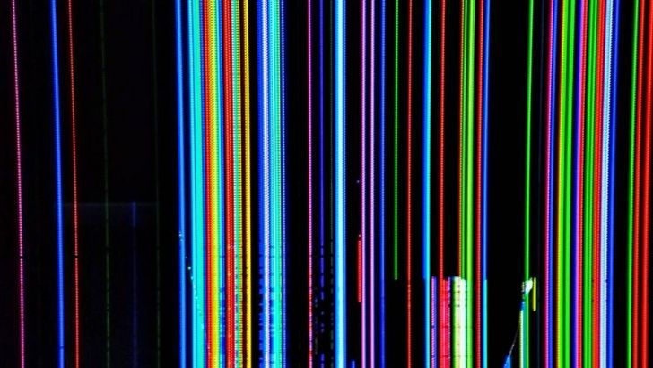
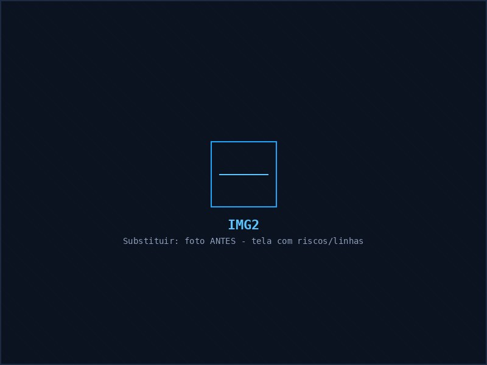
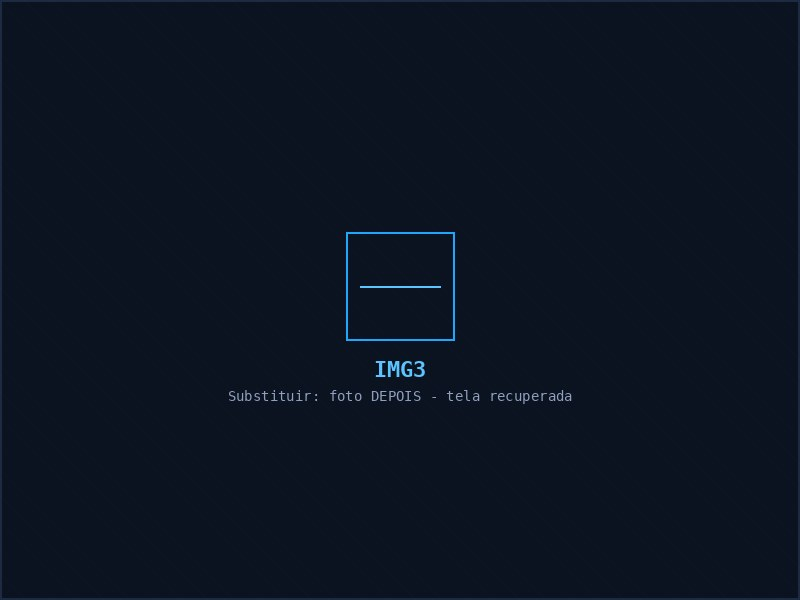
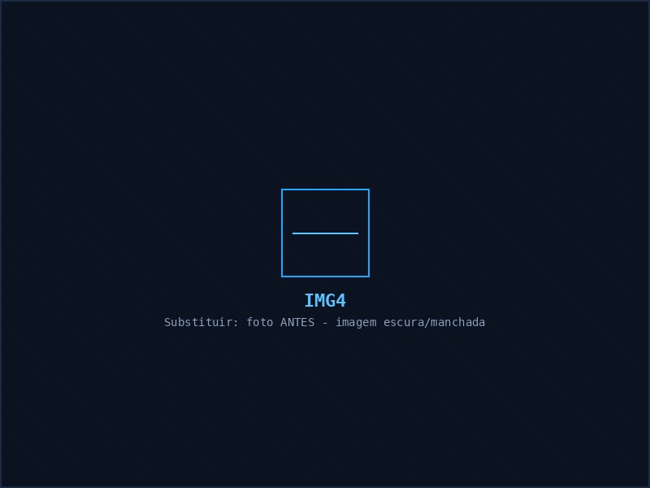
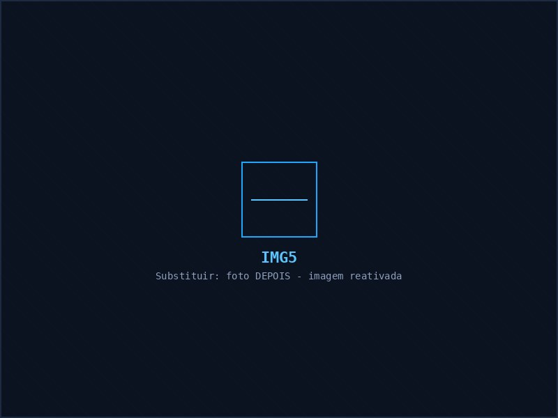

Talvez você não precise comprar uma TV nova.
Recuperamos displays de TV utilizando tecnologia de reparo especializado, avaliando a possibilidade de recuperação antes de você gastar com a substituição da tela.
Envie uma foto da tela + o modelo da TV pelo WhatsApp.
Faça uma avaliação antes de decidir. Estes problemas podem, dependendo do diagnóstico e do estado do painel, ter possibilidade de recuperação:
A possibilidade de recuperação depende da análise técnica do painel — por isso, o primeiro passo é sempre uma avaliação.
A recuperação utiliza equipamentos específicos para trabalhar nas conexões extremamente delicadas do display, com controle de temperatura, pressão e tempo.
O resultado? Recuperar uma tela que, em determinadas situações, poderia acabar sendo considerada inviável para reparo.
Avaliação e recuperação de determinados defeitos em painéis de TV.
Serviço especializado em falhas relacionadas às conexões do display.
Análise do defeito antes de definir se o reparo é viável.
Avaliação de outros componentes da TV quando necessário.
Importante: a possibilidade de recuperação depende da análise técnica do painel — por isso não prometemos resultado antes da avaliação.
| Opção | O que costuma acontecer |
|---|---|
| Comprar uma TV nova | Alto investimento |
| Substituir o display | Pode ter alto custo |
| Avaliar possibilidade de recuperação | Pode ser uma alternativa mais em conta |
Antes de gastar com uma TV nova, consulte nossa equipe.
Enviar minha TV para avaliação →Arraste a foto pra comparar o antes e o depois.


Falha na conexão do display, recuperada sem trocar a tela.


Recuperado com equipamento especializado, sem marca visível.


Recuperação de imagem em display com falha de retroiluminação.
Mande uma foto da tela e o modelo da TV pelo WhatsApp.
Nossa equipe analisa o defeito apresentado.
Nem todo display pode ser recuperado. Por isso a análise é importante.
Antes de realizar o serviço, você sabe as condições do reparo.
Com equipamento e procedimento adequados ao diagnóstico.
Espaço reservado para avaliações reais do Google — de preferência com nome e cidade do cliente (com autorização dele).
Cole aqui uma avaliação real do Google, com nome e cidade do cliente.
Cole aqui outra avaliação real — de preferência de uma cidade diferente da região.
Cole aqui uma terceira avaliação real, assim que estiver disponível.
Depende da origem da falha e das condições do painel. Envie uma foto para uma avaliação inicial.
Tela fisicamente quebrada é diferente de uma falha de conexão ou defeito eletrônico. É necessária avaliação.
Atendemos as principais marcas de TV do mercado. Envie o modelo da sua TV pelo WhatsApp para confirmarmos.
Na maioria dos casos sim — mande uma mensagem pelo WhatsApp que explicamos como funciona o atendimento.
Sim, atendemos Campo Mourão, Peabiru, Luiziana, Farol e cidades da região.
O valor depende do modelo da TV e do defeito apresentado. Fazemos uma avaliação antes de passar qualquer orçamento.
Envie uma foto da tela e o modelo da sua TV. Nossa equipe fará uma avaliação inicial e orientará sobre os próximos passos.
Quero avaliar minha TVCampo Mourão e região
Conserto de TV em Campo Mourão · Recuperação de Display · Conserto de TV com Linhas · Recuperação de COF · Assistência para TVs em Campo Mourão e região